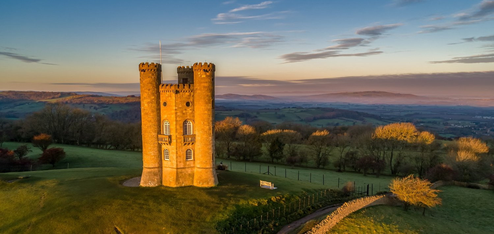
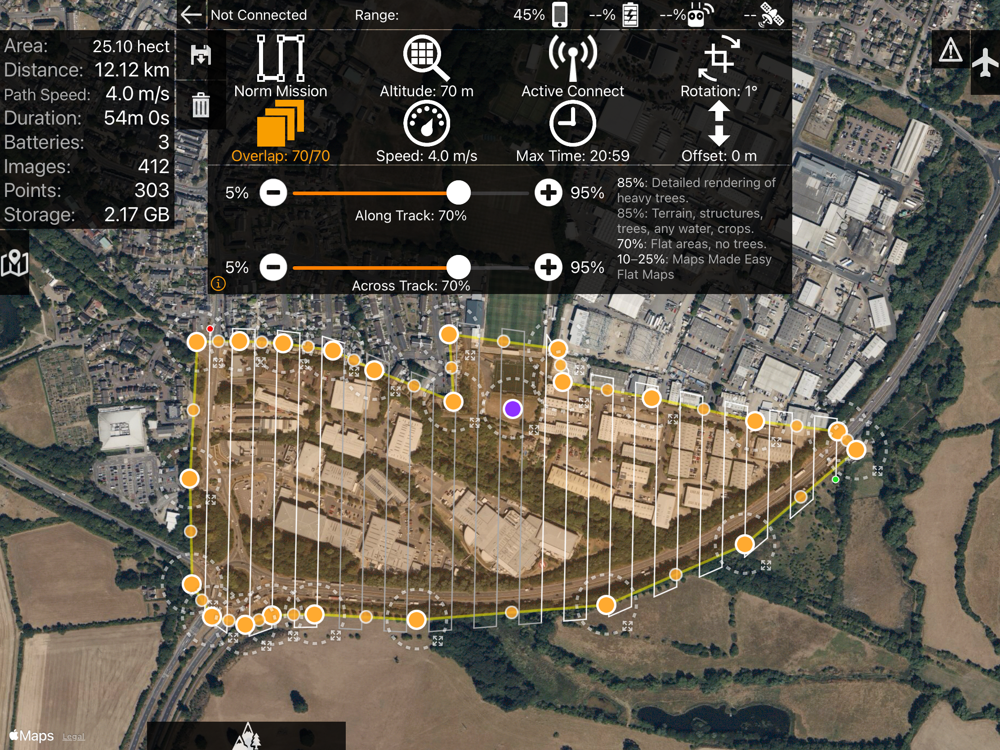
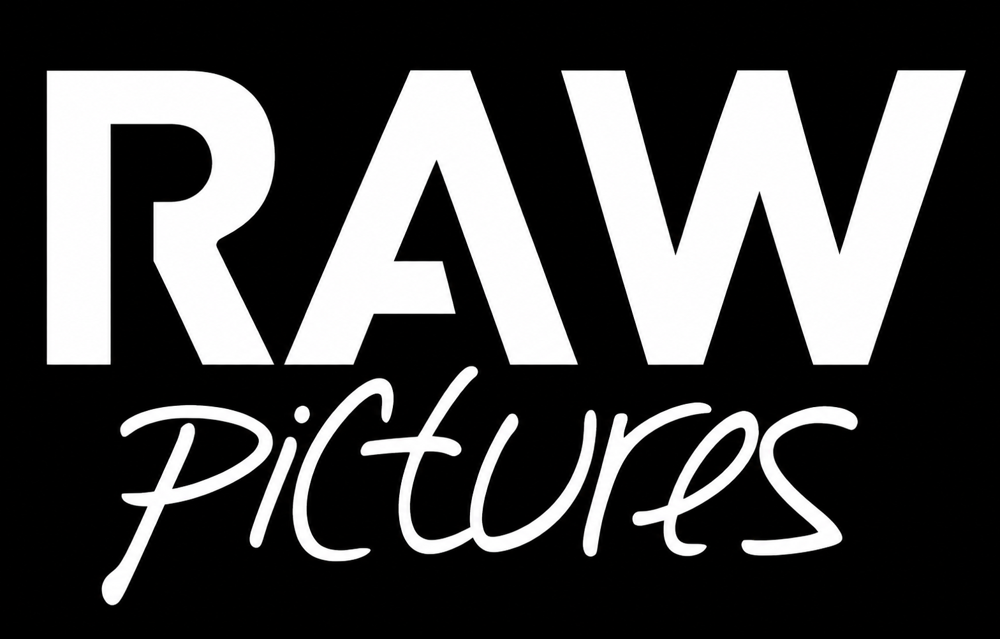
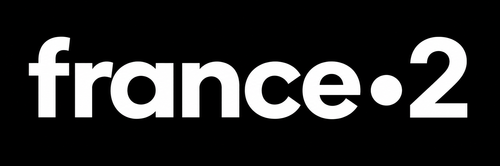
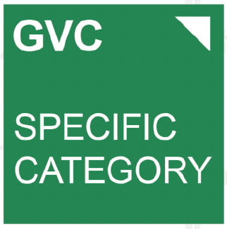
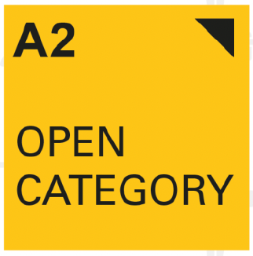

Aerial Photography & Video
High-quality aerial imagery for property, marketing, events, editorial work and commercial productions.
Cotswolds and Surrounding Counties · UK
Commercial drone services for media, property, construction, surveying and specialist aerial projects
Cotswold Drone Pilots
We provide professional drone filming, fpv fly-throughs, roof and building inspections, mapping and commercial aerial imagery.
From cinematic footage for media projects to construction progress updates and photogrammetry missions, every project is carefully planned to deliver the right imagery, data and results.
Services
A flexible range of aerial services for property, construction, media, inspection and survey applications.
High-quality aerial imagery for property, marketing, events, editorial work and commercial productions.
Immersive indoor and outdoor FPV flights designed to move naturally through properties, venues and workplaces.
Safer visual access to roofs, elevations and difficult-to-reach areas without the immediate need for scaffolding or access equipment.
Planned repeatable flight missions for mapping, site surveys, progress monitoring and photogrammetry capture.
Repeatable aerial viewpoints and time-lapse style progress coverage for construction and development projects.
Exterior aerials, location context, cinematic video and FPV tours for residential and commercial property marketing.

Cinematic aerial imagery
Smooth cinematic aerial footage creates scale, context and impact that is difficult to achieve from the ground.

Mapping & Photogrammetry
Mapping missions use programmed flight paths and consistent overlap to capture large areas methodically. This can support site surveys, construction monitoring, orthomosaic imagery and 3D modelling workflows.
It is a very different workflow from general aerial photography: accuracy, coverage and repeatability matter as much as the image itself.
Clients & Projects


Safe & Professional Operations
Commercial operations are planned around the location, airspace, people, property and the required outcome.
Risk assessment, operational planning and appropriate permissions are considered before the aircraft leaves the ground.


Start a Project
Tell us what you are trying to achieve, where the project is and when you need it. We can advise on the most suitable approach.